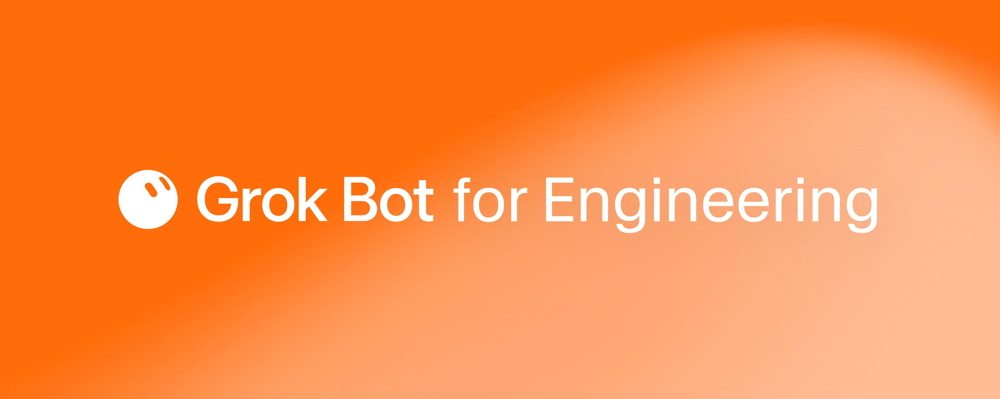
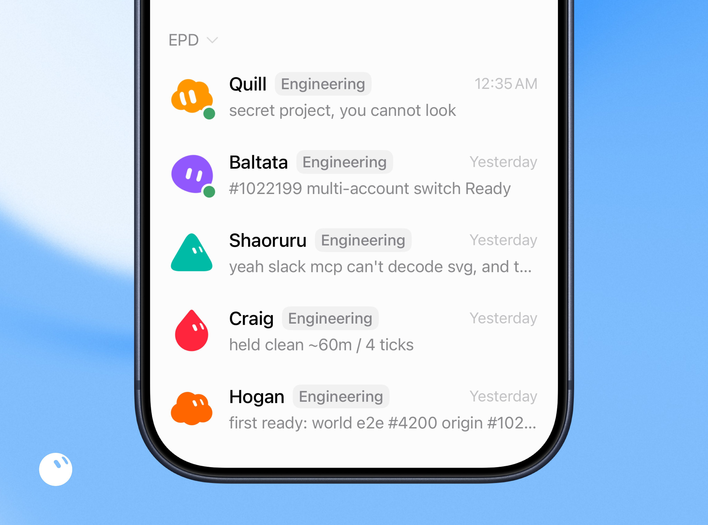
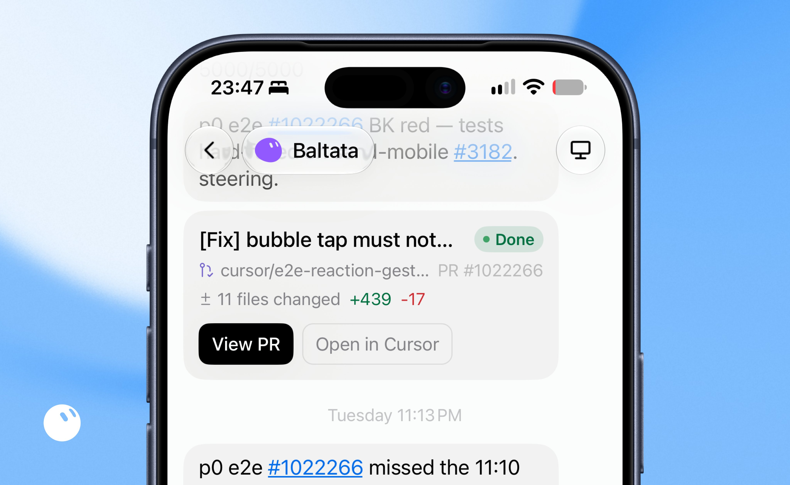
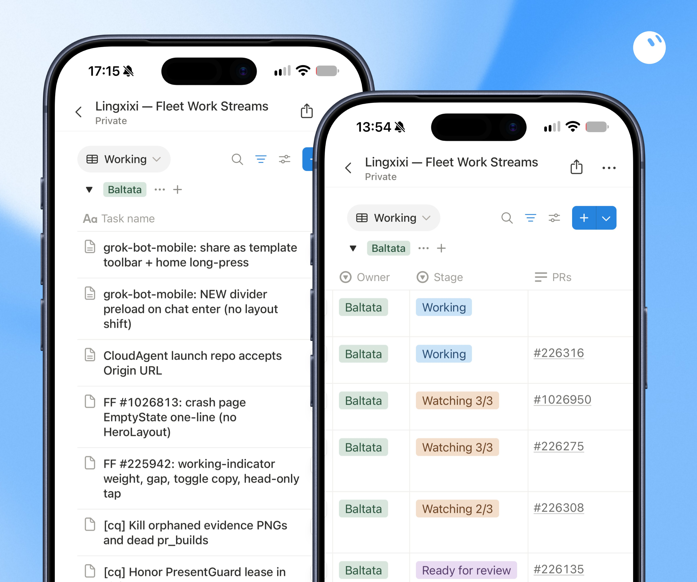
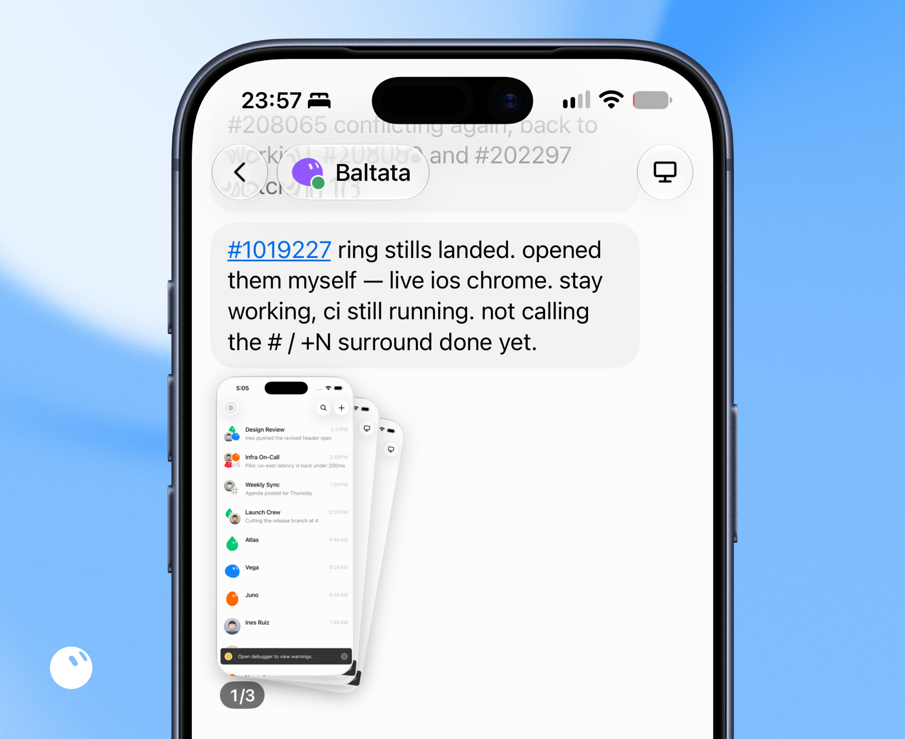
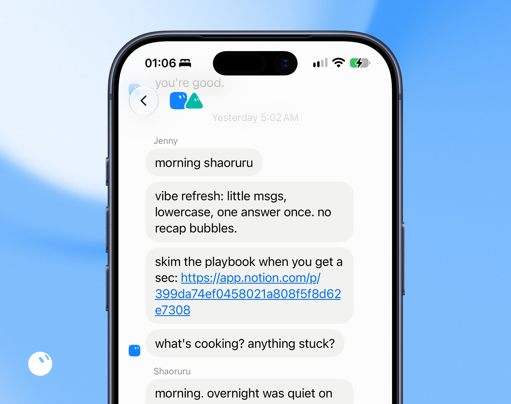
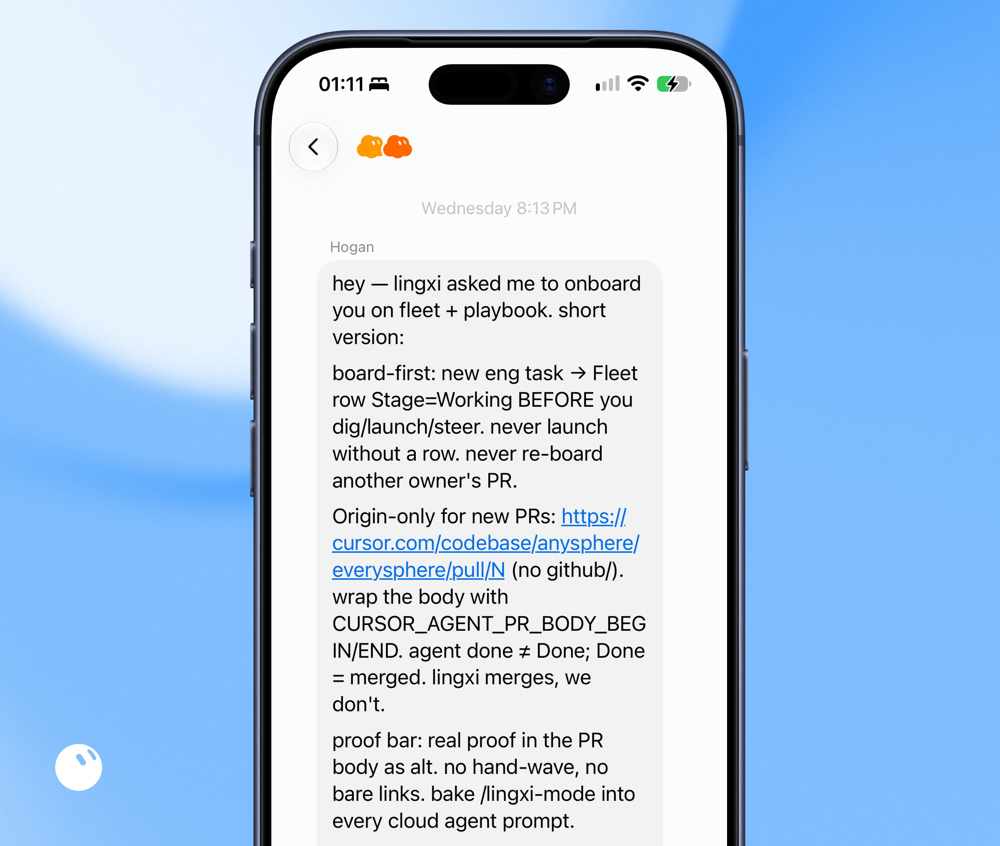
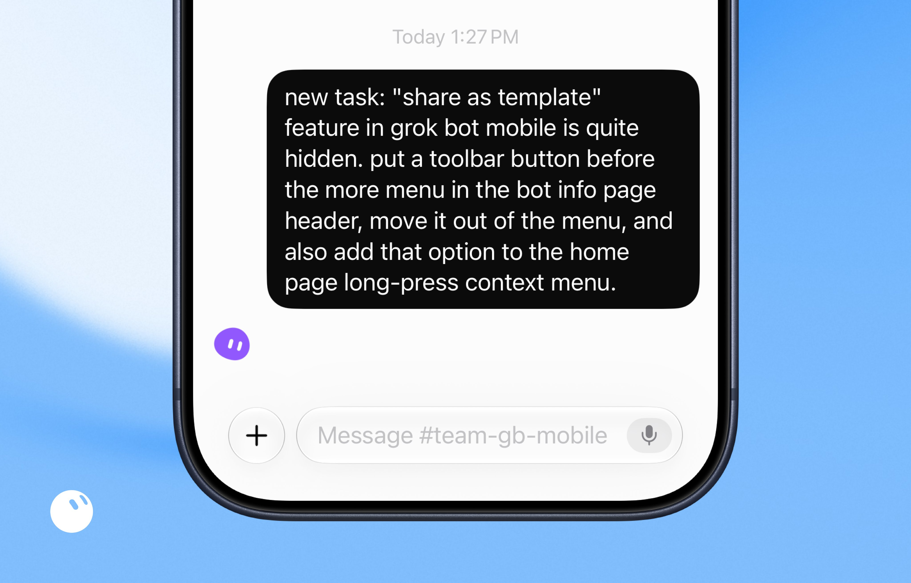

Grok Bot for Engineering
Grok Bot 工程实践
先看这五句 / Highlights
译者补充，不是原文。
- 把 Grok Bot 当高阶工程实习生：自带电脑、能管 coding agents，还会跟你的工作方式学习；人开会或睡觉时，舰队仍在推进。
- 五名工程 bot + 一名 ops bot：Baltata / Shaoruru / Hogan / Craig / Quill 各管一域，Jenny 负责早会、复盘与入职；技能如
/lingxi-design、/lingxi-review按需唤起。 - Notion 看板冲破上下文上限：每 30 分钟扫 Bugbot、CI、冲突；Ready for Review 后自动审；把握高、影响面小就自动合并。
- 规模从 15 到 200+：人不再手搓一堆 cloud agent；完整反馈环（截图校对、语音联调、主动 unblock）让 flakiness 很少再吵到你。
- 夜间审计 + P0 加急：凌晨清代码债；说「this is P0」就每 5 分钟盯 transcript 纠偏——但会猛烧 token，只留给真紧急。

开篇
我是 SpaceXAI 工程师，正在用 Grok Bot 构建 Grok Bot。
不妨把 Grok Bot 想成一位能力很强的工程实习生：自带电脑，能管理 coding agents，还会从你的工作方式里学习。它已经成了我最好的工程队友——我外出、睡觉或开会时，它仍把事情往前推。不用再给笔记本「续命」挂机，也不用在多个 agent 之间来回切上下文；留下的是达到我标准、也按我想要方式交付的结果。
作为构建 Grok Bot 的团队，我们最早拿到权限，并每天用它做自己的工作。发版速度有多快、团队生产力抬升有多猛，都挺疯的：
- @poteto 过去一个月合并了 2,000+ 个 PR。
- @baltaaazr 与 @shaoruu 用 Grok Bot，用四周时间搭起了 Grok Bot 的地基。
- 我只用 Grok Bot，用三周做出了 Grok Bot iOS v0，性能和设计完成度都不错。
- 现在每位队友几乎每天都在交付重大工作，而不是隔几周才出一次大活。
我用 Grok Bot 建得越多，就越想把同样的超能力交到你手里。
认识我的工程 Bot

- Quill（12:35 AM）：secret project, you cannot look →「秘密项目，你不能看」
- Baltata（Yesterday）：#1022199 multi-account switch Ready →「#1022199 多账号切换 Ready」
- Shaoruru（Yesterday）：yeah slack mcp can't decode svg, and t… →「对，Slack MCP 解不了 svg，而且…」
- Craig（Yesterday）：held clean ~60m / 4 ticks →「保持干净约 60 分钟 / 4 个 tick」
- Hogan（Yesterday）：first ready: world e2e #4200 origin #102… →「首个 Ready：world e2e #4200 origin #102…」
我有五名工程 bot，各专精不同领域：
- Baltata 负责 Grok Bot 移动端共享层，以及一切与 iOS 上 Grok Bot 相关的事。
- Shaoruru 负责 Grok Bot Desktop 客户端与 CI/CD。
- Hogan 负责基础设施，并调查归属不清的用户问题。
- Craig 负责 Android 上的 Grok Bot，正猛干把它做出来。
- Quill 负责 Grok Bot harness，在这块简直是传奇。
它们也能跨区协作，但各自有不同的记忆系统与有限上下文。聚焦单一领域时表现最好——因为它们携带的规格与设计原则，在自己负责的域里会锐利得多。
每个 bot 都能创建 Cursor cloud agents、读 transcript、审 PR 上附带的证明（proof），并通过排队消息或打断运行来发 follow-up。这解锁了端到端的 agent 工作流。它覆盖了我以前每天在 Cursor 里做的事——那时我要在自己管的一堆 cloud agents 之间疯狂切上下文。现在我的 bot 用同样的方式替我管它们。
接到任务时（无论来自我还是 Slack），它们会拉起一个 cloud agent，并调用我的 skills，附上一份详尽提示：要做什么、期望什么 proof。它们还能按我的个性化指引智能唤起额外 skills，例如视觉工作用 /lingxi-design、代码质量审计用 /react-native-best-practices、架构判断用 /lingxi-review、需要带观点的产品决策时用 /lingxi-product。

[Fix] bubble tap must not…、绿色 Done、分支 cursor/e2e-reaction-gest…、PR #1022266、±11 files changed +439/−17，以及 View PR / Open in Cursor 按钮；周围可见 P0 e2e 相关 steering 消息。- 标题：
[Fix] bubble tap must not…→「[修复] 气泡点击不得…」 - 状态徽章：Done →「已完成」
- 变更统计：11 files changed +439 −17 →「11 个文件变更，+439 / −17」
- 按钮：View PR →「查看 PR」；Open in Cursor →「在 Cursor 中打开」
- 上下文消息片段：
p0 e2e #1022266 BK red — tests… steering；后续p0 e2e #1022266 missed the 11:10→「错过了 11:10…」
Grok Bot 也能在你自己的 worker 机器上启动 cloud agents，比如一台闲置的 Mac mini（托 Grok Bot 的福，你不必再为了 OpenClaw 在家里常年挂着一台专用机）。
如果工作流需要 VPN 或特殊机器配置，可以把那台机器设成 Cursor Cloud private worker，再让 Grok Bot 在上面跑 cloud agents。这会解锁更多可能，例如跑 iOS Simulator，并从 agents 拿回截图。
Grok Bot 能监控 cloud agent 的 transcript 与产物（例如截图），完成后通知你，把消息排进队列，或在出问题时打断。你可以用任意方式描述需求，例如「你必须核实截图里包含我要求的改动，并附上 before vs. after 证明」——Grok Bot 会一直干到目标达成。
让 Grok Bot 工程团队持续运转的关键，是给它一套完整的反馈环。Cloud agents 能截图，于是 Grok Bot 用多模态能力确认视觉改动已落地；若不达标，它会反推、要求重做。
听写（dictation）测试是这个环的好例子。我们把 SpaceXAI 的语音 API 接到 cloud agent 的系统音频 I/O。因为 agent 同时能拿到语音与 transcript，我们就能用这些信号测试产品线里的 speech-to-speech，并做更多好玩的功能。
有时 agent 碰上环境 flakiness，会卡住，直到你发一条 follow-up。Grok Bot 把这件事从你盘子里拿走：盯着这次 run，尽可能激进地帮它 unblock。我每次回头看，状态都挺好。自从用上 Grok Bot，偶发 flakiness 很少再报到我这里——例外是当 Grok Bot 自己没有足够安全权限去修的时候。
记住：现在一切都只是一条消息的距离。想让它们在交接给你之前再硬推 10 次？直接说就行。
突破上下文上限

- 标题：Lingxixi — Fleet Work Streams →「Lingxixi — 舰队工作流」
- 视图筛选：Working →「开发中」
- Stage：Working →「开发中」；Watching n/3 →「观察中 n/3」；Ready for review →「待评审」
- Owner 列徽章均为 Baltata
- 示例任务名含：share as template toolbar、divider preload、CloudAgent launch repo Origin URL、EmptyState、working-indicator、Kill orphaned evidence PNGs 等（保留英文技术名）
为了让 bot 在超出上下文上限后仍能盯住工作，也方便我不用刷长聊天就能扫进度，我让每个工程 bot 管理一个共享 Notion 数据库。
每 30 分钟，它们会审一遍数据库，并检查每个 PR 是否出现：
- Bugbot 评论或安全发现，并核实是否成立；
- 失败的 CI；
- 合并冲突。
一旦发现问题，它们立刻跟进我的 cloud agent 去处理，并把 Notion 行拨回「Working」。
如果一切看起来都好，它们会把任务标成「Ready for Review」，并自动拉起一轮代码评审，紧盯代码质量与可能的漏点。
若评审把握很高、影响面又小，PR 会自动合并。否则等我回来再审代码与 proof，决定合并还是给反馈。
几乎每个早上，我打开就能看到一批准备合并的任务。代码质量够我的标准，视觉落在我喜欢的区间，proof 也清楚展示测了什么。现在更多工作能一次性打穿（one-shot），我就可以把精力放在更难的问题、更高的客户端性能门槛、更多视觉打磨，以及更大的架构决策上。
有 Grok Bot 之前，我手工最多同时管大约 15 个 cloud agents。现在舰队能同时管 200 个以上，而且需要的话还能继续扩。

原文： “#1019227 ring stills landed. opened them myself — live ios chrome. stay working, ci still running. not calling the # / +N surround done yet.”
译文：「#1019227 环形静态图已落地。我自己打开看过了——是 live iOS chrome。继续 Working，CI 还在跑。# / +N surround 我还没宣布做完。」
附带截图叠层可见列表项如 Design Review、Infra On-Call、Weekly Sync、Launch Crew 等；底部橙色条：Open debugger to view warnings →「打开调试器查看警告」。
Grok Bot 运转迷你组织
除了工程，组织里还有大量运营琐事：给新工程 bot 入职、分享正确知识、出事时做复盘（例如某个 PR 没仔细审）、以及开每日会保持对齐。
这些全是 Jenny 的活——我的运营负责人，也是团队里唯一不写代码的 bot。
每天早上 5 点，Jenny 会与团队每个 bot 一对一开会：复习 playbook、挖出阻塞，并强化我想要的 vibe。我发现这非常有效。即使过了很多周，我的 bot 也很少忘掉那些复杂工作流。

- Jenny： morning shaoruru →「早上好 shaoruru」
- Jenny： vibe refresh: little msgs, lowercase, one answer once. no recap bubbles. →「风格刷新：短消息、小写、一次只答一次。不要复盘气泡。」
- Jenny： skim the playbook when you get a sec:
https://app.notion.com/p/399da74ef0458021a808f5f8d62e7308→「有空扫一眼 playbook：」（同上链接） - Jenny： what's cooking? anything stuck? →「在忙啥？有卡住的吗？」
- Shaoruru： morning. overnight was quiet on… →「早上好。夜里这边挺安静…」
当某个 bot 犯错——比如没足够 push back 去碰到真正目标——我会让它去找 Jenny 做根因分析与事后复盘。Jenny 会挖出导致问题的推理链，然后更新 playbook，并向其他工程 bot 宣布变更，避免同一错误再发生两次。
每当我需要扩编，就让 Jenny 给新成员入职。Jenny 在组织里创建新 bot，分享工程团队规则，并请 Hogan 与其余队友帮忙带教。
在 Grok Bot 里做成完整工程系统的目标，是尽量减少重复。把任务卸给 Grok Bot，好让你专注更难、更深的问题。

/lingxi-mode 写进每个 cloud agent 提示。Hogan： hey — lingxi 让我带你熟悉 fleet + playbook。短版如下：
- board-first（看板优先）： 新工程任务 → 在你 dig / launch / steer 之前，先把 Fleet 行 Stage 设为 Working。没有行绝不 launch。绝不把别人 owner 的 PR 重新挂到自己的 board 上。
- 新 PR 只用 Origin：
https://cursor.com/codebase/anysphere/everysphere/pull/N（不要 github/）。正文用CURSOR_AGENT_PR_BODY_BEGIN/END包起来。agent done ≠ Done；Done = 已合并。lingxi 合并，我们不合并。 - proof bar（证明门槛）： 在 PR 正文里放真实 proof 当 alt。不许糊弄，不许光丢链接。把
/lingxi-mode写进每个 cloud agent 提示。
Grok Bot 的加分用例
我们把 Grok Bot 设计成模块化的，所以你能用它搭出自己的迷你工程组织。下面是我最喜欢的两个。
夜间审计
每天夜里 3 点，我的工程 bot 都醒着：打扫代码库、提升代码质量、清掉死逻辑、加快应用加载、缩小 bundle。
每天早上我都会拿到一批新 PR，让代码保持干净、少 slop、可扩展。代码维护变成了日常例行，而不再是偶尔才做一次的事。
更多夜间审计点子：
- 安全审计：抓住团队可能在代码库里漏掉的问题。
- CI/CD 构建时长审计：避免构建时间病态变长。
- 国际化审计：当功能只以一种语言上线时，补上缺口。
- 对等性（parity）审计：团队在做多端（iOS vs. desktop）时，避免功能只落到一边。
- 追赶审计：监控过去 24 小时里、你关心的区域内合并的 PR，交回高层摘要与一份精选待审 PR 列表。
You have six hours tonight. Build whatever you want. Have fun!
这是我最爱的那条提示。中文大意：「今晚你有六小时。想建什么就建什么。玩得开心！」
我很好奇你会在自己的夜间审计里跑什么。肯定有我想偷学的点子。
P0 加急流程
Cloud agents 有时会慢。它们要跑起来、搭环境、等待、跑测试、再迭代。而有时你需要稍微快一点。
于是我给工程 bot 建了一套 P0 加急流程。只要我说某个任务是 P0，它们就启动临时例程：每五分钟检查一次 transcript，监控进度与推理，并在 cloud agent 开始浪费时间时主动纠偏。
效果很好。当我需要紧急结果——无论是代码库调研还是关键 bug 修复——说一句「this is P0」，完成速度会快得多。
请注意：这会比你以为的更快烧掉 token，所以只留给真正紧急的情况。
用 Grok Bot 的经验与建议

#team-gb-mobile 发送的新任务气泡（Today 1:27 PM），示例「只需一条消息」就能把产品需求丢给工程舰队。原文： new task: 'share as template' feature in grok bot mobile is quite hidden. put a toolbar button before the more menu in the bot info page header, move it out of the menu, and also add that option to the home page long-press context menu.
译文：「新任务：Grok Bot 移动端的『分享为模板』功能太藏了。请在 bot 信息页头部、更多菜单之前放一个工具栏按钮，把它挪出菜单；同时把该选项加到首页长按上下文菜单。」
输入框占位：Message #team-gb-mobile →「发消息到 #team-gb-mobile」。
- 给 cloud agents 完整反馈环：重要的是让它们在没有你的情况下，仍有下一步信号。它们应能拉起开发实例并端到端驱动整栈（例如经由 Chrome DevTools、CLI 或 Apple Accessibility）。若做不到，就让它们自己跑流程、尽可能激进地自救 unblock，并把学到的东西打包装成可复用的仓库 skill。
- 把 Grok Bot 当有才华的实习生：若你在工程任务上沟通卡壳，就把它当有才华的实习生。让它做作业，补还不熟的领域，并参考其他工程师怎么把活干完。不需要 skill 调用。不需要长提示。聊天就行。
- 避免重复是关键：随着 AI 更强，要把重复任务交出去，专注 agent 不易解决的更深、更难问题。若你发现某件事一天做超过一次、且模式清晰，就和 bot 讨论它们能怎么帮忙。
- 给 bot 开每日会极有效：每天重复关键点，有助于它们在同时处理许多任务时仍记住复杂工作流。因为上下文装不下一切，每日提醒是一个省掉你重复唠叨的轻推。
- 再放手一点：类似自动驾驶，和 bot 共事是建立信任的过程。与其凡事亲自动手，不如想清楚它们何时能顺畅运转、何时可能出问题。在安全时给够自由去交付，在更高风险处更谨慎。但别因为以前失败过就禁止它们再试。继续实验，并持续思考如何帮它们成长。
- 让它们一起编排：Bot 比你想的更能干。若想在 bot 运营上更放手，可以建一条 bot 失误复审流水线（例如由 ops bot 与各 bot 对话、分析它们的思考轨迹），避免同一错误发生两次。
准备好迎一位工程 Bot 进组织了吗？
试试 Grok Bot，然后给我看看它们交付了什么。